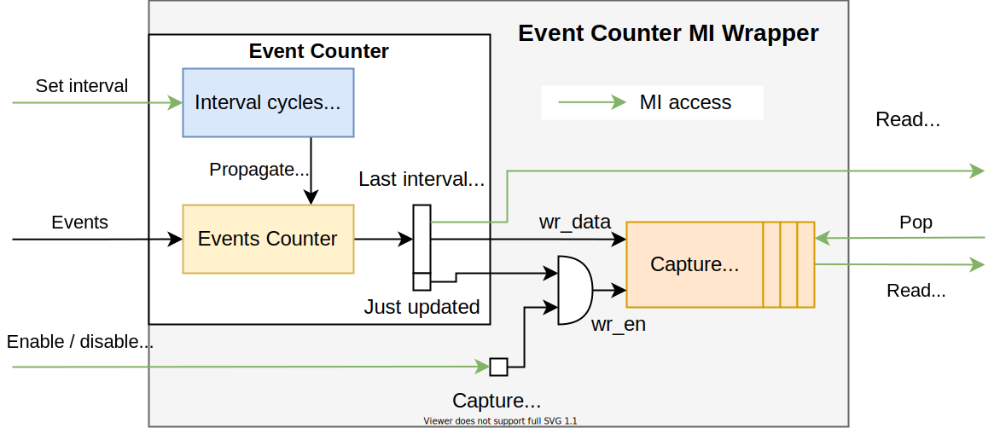

Event Counter
The Event Counter is a debuging unit for receiving statistics of occurence frequency of a certain event. It is made accessible through MI interface using the Event Counter MI Wrapper. The MI address space consists of 4 addresses which are configured by the user as generics.
First the user writes in the desired measuring interval length (in number of cycles).
After this, the unit starts accumulting the number of events which occurs on the EVENT interface during one interval.
The number of maximum concurrent events in one cycle is defined by the MAX_CONCURRENT_EVENTS generic.
When the end of the interval is reached, the counted number of events is propagated to output register together with the actual number of cycles in the interval.
This value can be different from the value set by the user when the width of the cycles counter is set lower then the MI data width or when the newly set interval size has not been reached and the register contains an older value.
It is thus recomended to read the number of cycles from this register as the actual correct refference to the number of counted events.
Once a whole interval has been counted, the events counter and the cycles counter are reset and the counting automatically continues to the next interval. From the view of the user this means, that the values read from the output register can change all the time.
Architecture
{kind=link}
Capture feature
Sometimes it is useful to be able to see the evolution of the event’s occurence across time.
The user can read the output counter register to get the rough idea.
(e.g. NOW events are occuring a lot. A second later there are none.)
However, this way the user is not able to read counted intervals exactly one after another.
Many intervals can pass between 2 MI reads done from SW.
For this reason the Event Counter contains a feature to capture consecutive counter results into a FIFO and read them afterwards.
This feature can be configured using generics CAPTURE_EN and CAPTURE_FIFO_ITEMS.
The capture feature is controlled through MI interface the following way:
Set the interval of the Event Counter to start it
Write ‘1’ to the Capture Enable register
Wait a bit for the FIFO to fill
Write ‘0’ to the Capture Enable register
- While the value at the FIFO output is valid
Read the value at the FIFO output
Pop the value from the FIFO by writing at the FIFO output address
Here is an example of how this feature can be used to monitor traffic load on a data bus:
We have a data bus (for example MFB) and we want to monitor how the number of bytes passed through the bus changes over the course of 1 second and plot it in a graph. The bus is 64 bytes wide and runs on 200 MHz frequency.
First we define our “event”. The event will be a single byte passing through the bus. (
MAX_CONCURRENT_EVENTS == 64) To count the number of bytes on the bus we can use for example the component MFB_AUXILIARY_SIGNALS together with a sum of 1s in a vector.Now we need to specify a quantum of time in the resulting graph. If we used 1 cycle as a quantum the result would contain
200 000 000values in range0 - 64. This would require a 200 000 000 items large FIFO, which is not possible to implement on an FPGA. However, we can utilize the ability of the Event Counter to accumulate events over a certain interval before capturing it. If we set the interval of the counter to200 000, we will get a quantum of 1 ms for our resulting graph. The value200 000can fit to 18 binary digits and the maximum number of events in one interval will be200 000 * 64, which fits into 24 binary digits. Thus we will be able to set and read these values through a 32-bit MI bus. Since the time quantum is now 1 ms, we only need 1 000 items to be stored in the capture FIFO. The size of the FIFO can therefore be set to1 024items.This setup will allow us to capture and plot the changes in the traffic on the data bus over 1 second, milisecond after milisecond.